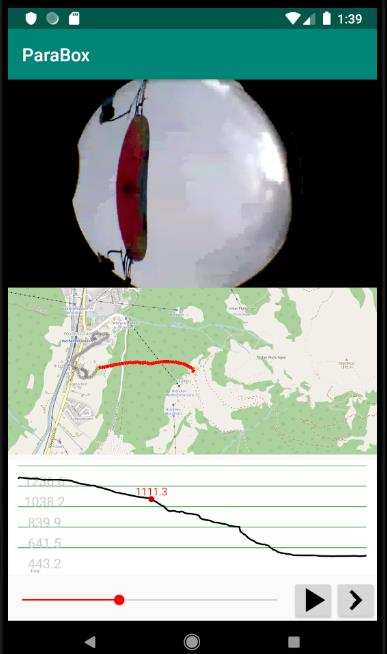

Parabox · Einladung an PilotenParabox · an invitation to pilots
Zeig deine Flüge. Alle.Show your flights. All of them.
Mit Gleitschirm, Speedflyer und Delta sterben in der Schweiz mehr Menschen als in der ganzen übrigen Leichtaviatik: 17 im Jahr 2025, 13 davon am Gleitschirm. Und von keinem dieser Unfälle gibt es ein Bild der letzten Sekunden. Die übrige Luftfahrt macht es anders: Was geschieht, wird aufgezeichnet, gezeigt und besprochen. Diese Kultur bringen wir in den Gleitschirmsport, Pilot um Pilot, freiwillig und mit Vorbild. Paragliders, speedflyers and hang gliders kill more people in Switzerland than all the rest of light aviation: 17 in 2025, 13 of them paragliding. And of none of these accidents is there a picture of the last seconds. The rest of aviation does it differently: what happens is recorded, shown and discussed. We bring this culture into paragliding, pilot by pilot, voluntarily and by example.
Die Parabox macht es ohne Aufwand: ein kleines Gerät im Cockpit filmt Kappe und Hände, du fliegst, der Rest geschieht von selbst. Starts, Landungen und Störungen deiner Flüge erscheinen mit dem Log auf dieser Seite, für dich zum Nachschauen, für die anderen zum Lernen. The Parabox makes it effortless: a small device in the cockpit films canopy and hands, you fly, the rest happens by itself. Launches, landings and incidents of your flights appear with the log on this site, for you to look back at, for the others to learn from.
- 1Kamera: sieht die ganze Kappe und deine Hände an den BremsenCamera: sees the whole canopy and your hands on the brakes
- 2Solarzelle: lädt im FlugSolar cell: charges in flight
- 3Roter Knopf: setzt eine Marke, wenn etwas warRed button: puts a mark when something happened
Was du zusagst, was du bekommstWhat you commit to, what you get
Du zusagstYou commit
Du bringst die Parabox im Cockpit an und veröffentlichst Starts, Landungen und Störungen deiner Flüge mit dem Log hier auf der Seite. Grundsätzlich alle: Das Vorbild wirkt nur, wenn auch die unschönen Landungen dabei sind.You fit the Parabox in the cockpit and publish launches, landings and incidents of your flights with the log here on the site. As a rule all of them: the example only works if the ugly landings are in it too.
Du entscheidest bei jedem Flug selbst; Ausnahmen sind möglich. Was du nicht freigibst, sieht niemand, und der Rest des Films bleibt immer bei dir.You decide for every flight yourself; exceptions are possible. What you do not release, nobody sees, and the rest of the film always stays with you.
Du bekommstYou get
Ein Gerät aus der ersten Serie, bevor es sie zu kaufen gibt. Deine eigenen Störungen im Player, Bild für Bild, mit Höhe und Sinken, und bei einem Kontrollverlust eine Einordnung durch einen SIV-Lehrer.A device from the first series, before they can be bought. Your own incidents in the player, frame by frame, with altitude and sink, and after a loss of control an assessment by an SIV instructor.
Die Starts, Landungen und Störungen der anderen zum Lernen. Eine zweite Spur deines Flugs als IGC-Datei und ein Vario-Ton, falls du einen willst. Und du gehörst zu denen, die angefangen haben.The launches, landings and incidents of the others to learn from. A second track of your flight as an IGC file and a vario tone, if you want one. And you are one of those who started it.
Ich mache mitCount me in
Schreib mir eine Mail. Der Knopf füllt sie vor; du ergänzst Name, Wohnort, Klub, Schirm und wie viel du fliegst. Ich melde mich bei dir.Send me an email. The button fills it in; you add your name, where you live, club, wing and how much you fly. I will get back to you.
Ich mache mit →Count me in →Oder von Hand anOr by hand to
joergkorner@gmail.com
WarumWhy
Tödliche Unfälle in der Schweizer Luftfahrt, nach JahrFatal accidents in Swiss aviation, by year
| JahrYear | HängegleiterHang gliders | übrige Freizeitfliegerei, Helikopterother recreational flying, helicopters | Linienverkehrairline traffic |
|---|---|---|---|
| 2019 | 7 | 7 | 0 |
| 2020 | 10 | 4 | 0 |
| 2021 | – | 5 | 0 |
| 2022 | 8 | 6 | 0 |
| 2023 | 10 | 2 | 0 |
| 2024 | 6 | 3 | 0 |
| 2025 | 17 | 5 | 0 |
Hängegleiter: Unfälle mit Todesfolge gemäss den Unfallanalysen des Schweizerischen Hängegleiter-Verbands (2021 ohne Jahresanalyse; 2024: vier Schweizer Piloten und zwei Gastpiloten; 2025: 13 Gleitschirm, 2 Delta, 2 Speedflying, Stand Oktober). Übrige Luftfahrt: Unfälle mit Todesfolge gemäss SUST und BAZL, Motorflugzeuge, Helikopter, Segelflugzeuge, Ballone, Ecolight; Hängegleiter sind darin nicht enthalten, weil die SUST sie nicht untersucht. Linienverkehr: kein tödlicher Unfall in der Schweiz seit 2001. Hang gliders: accidents with fatal outcome according to the accident analyses of the Swiss Hang Gliding Association (no annual analysis for 2021; 2024: four Swiss pilots and two guest pilots; 2025: 13 paraglider, 2 hang glider, 2 speedflying, as of October). Other aviation: accidents with fatal outcome according to STSB and FOCA, powered aircraft, helicopters, sailplanes, balloons, ecolight; hang gliders are not included because the STSB does not investigate them. Airline traffic: no fatal accident in Switzerland since 2001.
Gleitschirmfliegen fordert Jahr für Jahr mehr Tote als alle Motorflugzeuge, Helikopter, Segelflugzeuge und Ballone zusammen, und in keinem dieser Fälle untersucht eine Behörde, was in den letzten Sekunden geschah. Die Luftfahrt hat vorgemacht, wie diese Zahl sinkt, mit zwei Strategien: einer Sicherheitskultur, in der Fehler gemeldet und besprochen werden, statt verschwiegen; und Technik, die festhält, was geschah, damit man aus jedem Zwischenfall lernen kann. Für das Zweite haben Verkehrsflugzeuge die Blackbox. Paragliding claims more deaths year after year than all powered aircraft, helicopters, sailplanes and balloons together, and in none of these cases does an authority investigate what happened in the last seconds. Aviation has shown how this number comes down, with two strategies: a safety culture in which errors are reported and discussed rather than hidden; and technology that records what happened, so that every incident can be learned from. For the second, airliners have the black box.
Parabox ist beides für den Gleitschirm: ein Gerät, das Kappe, Hände, Spur und Höhe aufzeichnet, und Piloten, die zeigen, was sie aufgezeichnet haben. Nicht weil es jemand verlangt, sondern weil es die ersten vormachen und die nächsten nachziehen. So ist in der Luftfahrt jede Sicherheitskultur entstanden. Parabox is both for the paraglider: a device that records canopy, hands, track and altitude, and pilots who show what they recorded. Not because anyone demands it, but because the first ones lead and the next ones follow. That is how every safety culture in aviation came about.
Für die, die es genau wissen wollenFor those who want the details
Das Gerät: der PlanThe device: the plan Kamera, Strom, Teile, Kostencamera, power, parts, costs
Wo es sitztWhere it sits
Im Cockpit, nicht am Helm. Vom Cockpit aus liegt alles Interessante in derselben Halbkugel nach oben: Kappe, Leinen, Tragegurte und dazwischen die Hände mit den Bremsen. Der Helm dreht sich mit dem Kopf, und die Hände liegen unter seinem Horizont. Das Cockpit bewegt sich mit dem Körper, zeigt im Flug zur Sonne und ist immer dabei. Was man von dort nicht sieht, ist der Beschleuniger. In the cockpit, not on the helmet. From the cockpit everything of interest lies in the same upward hemisphere: canopy, lines, risers and, between them, the hands with the brakes. The helmet turns with the head, and the hands lie below its horizon. The cockpit moves with the body, faces the sun in flight and is always there. What you cannot see from there is the speed bar.
Kamera, Linse und RechnerCamera, lens and processor
Die Kamera ist ein fertiges Modul mit dem Sensor OV2640 und einer Weitwinkellinse mit 160 Grad Bildwinkel: 2 Megapixel, Farbe, Sensor 1/4 Zoll, mit Flachkabel-Anschluss; das Modul ist in grosser Zahl im Handel, weil es die Kamera der ESP32-Bastelwelt ist. Aufgezeichnet wird mit 800 × 600 Punkten und 10 Bildern pro Sekunde; die Bildkompression macht der Sensor selbst. Der Rechner ist ein STM32U5 von ST, ein Stromspar-Rechner mit eigenem Kameraeingang: Er nimmt die Bilder entgegen, schreibt sie in den Speicher, liest GPS und Barometer, erzeugt den Vario-Ton und meldet sich am Handy als Laufwerk. Mehr Teile mit Verstand gibt es nicht. The camera is a ready-made module with the OV2640 sensor and a wide-angle lens with a 160-degree field of view: 2 megapixels, colour, 1/4-inch sensor, with a flat-cable connector; the module is sold in large numbers because it is the camera of the ESP32 maker world. Recording is at 800 × 600 pixels and 10 frames per second; the sensor does the image compression itself. The processor is an STM32U5 from ST, a low-power processor with its own camera input: it takes the images, writes them to storage, reads GPS and barometer, makes the vario sound and shows up on the phone as a drive. There are no other parts with a brain.
160 Grad reichen: Die Kappe füllt rund 70 Grad, die Hände liegen 40 bis 60 Grad seitlich vom Zenit. Bei 800 Punkten über 160 Grad ist die Kappe gut 350 Punkte breit, eine Hand in einem halben Meter Abstand etwa 50. Leinen sind dünner als ein Bildpunkt und bleiben unsichtbar; Kappenform, Einklapper, Verhänger, Bremsenstellung und Hände sind klar. Am Bildrand ist das Bild stark verzerrt; die Verzerrung rechnet der Player heraus. 160 degrees are enough: the canopy fills about 70 degrees, the hands lie 40 to 60 degrees off the zenith. With 800 pixels across 160 degrees the canopy is a good 350 pixels wide, a hand half a metre away about 50. Lines are thinner than a pixel and stay invisible; canopy shape, collapses, cravats, brake position and hands are clear. At the edge the image is strongly distorted; the player undoes the distortion.
Was aufgezeichnet wirdWhat is recorded
Der ganze Flug, vom Start bis zur Landung, mit 10 Bildern pro Sekunde, durchgehend. Die Box wacht auf, sobald sie bewegt wird und Licht sieht, und beginnt zu filmen, sobald die Geschwindigkeit über Grund die eines Flugs ist; nach der Landung hört sie auf, im Rucksack und im Keller schläft sie. Der Speicher ist fest verbaut, 128 GB: Platz für die letzten sechzehn Flüge von fünf Stunden; ist er voll, fällt der älteste Flug weg. Gelöscht wird nie, eingerichtet wird nichts. Der grosse rote Knopf, gross genug für Handschuhe, setzt eine Marke in die Aufzeichnung: hier war etwas, eine Störung, eine Fastkollision, was der Pilot festhalten will, auch erst nach der Erholung, wenn der Schirm wieder fliegt. Der Player springt beim Nachbesprechen zu den Marken. The whole flight, from launch to landing, at 10 frames per second, continuously. The box wakes up as soon as it is moved and sees light, and starts filming as soon as the ground speed is that of a flight; after landing it stops, in the rucksack and in the cellar it sleeps. The storage is built in, 128 GB: room for the last sixteen flights of five hours; when full, the oldest flight drops out. Nothing is ever deleted, nothing is set up. The big red button, big enough for gloves, puts a mark into the recording: something happened here, an incident, a near collision, whatever the pilot wants to keep, even after recovering, once the wing flies again. The player jumps to the marks in the debrief.
Warum durchgehend und nicht nur, wenn es ruppig wird: Wir haben an 45'839 Flügen aus dem Wallis mit sekündlichem GPS und Barometer geprüft, ob die Unruhe im Barometer eine Störung ankündigt. Sie tut es nicht zuverlässig: Jede vierte Störung beginnt in Luft, die das Barometer bis zwei Sekunden davor ruhig fand, und genau diese ersten zwei Sekunden will man sehen. Die Ersparnis einer Umschaltung wäre klein, der Verlust träfe das Wichtigste. Ein Beschleunigungssensor ist nicht dabei: Einen Klapper spürt er am Piloten schlecht, die Kamera sieht ihn. Why continuously and not only when it gets rough: on 45,839 flights from the Valais with one-second GPS and barometer we checked whether barometric unrest announces an incident. It does not do so reliably: every fourth incident begins in air the barometer found calm up to two seconds before, and those first two seconds are exactly what one wants to see. The saving from switching rates would be small, the loss would hit what matters most. There is no accelerometer: it feels a collapse poorly at the pilot, the camera sees it.
Dazu ein GPS und ein Barometer. Das GPS (u-blox, Thalwil) schreibt die Spur, eine Position pro Sekunde; das braucht es, um eine Spirale oder einen Klapper in der Spur zu sehen. Datum und Uhrzeit kommen aus dem Satellitensignal; eine Uhr, die man stellen müsste, gibt es nicht. Der Barometer liefert Höhe und Sinken: Er löst 0.1 m auf, und nur damit wird aus der Höhe ein Sinken auf 0.1 m/s genau, das neben den Bildern den Klapper zeigt; die GPS-Höhe zittert um zehn Meter und kann das nicht. Die Spur jedes Flugs liegt als IGC-Datei auf der Box: eine zweite Aufzeichnung für den Piloten, falls Vario oder Handy ausfallen. Kein Sender, kein Funk. Einschalten muss niemand. Plus a GPS and a barometer. The GPS (u-blox, Thalwil) writes the track, one position per second; that is needed to see a spiral or a collapse in the track. Date and time come from the satellite signal; there is no clock that would have to be set. The barometer gives altitude and sink: it resolves 0.1 m, and only that turns altitude into a sink rate good to 0.1 m/s, the one that shows the collapse next to the images; GPS altitude jitters by ten metres and cannot. The track of every flight lies on the box as an IGC file: a second recording for the pilot in case vario or phone fail. No transmitter, no radio. Nobody has to switch anything on.
Der Vario-TonThe vario sound
Ein Piezo-Summer hinter einer Membran im Gehäuse macht aus dem Barometer ein Vario: Steigton und Sinkton, nur im Flug, ab Werk stumm. Ein kleiner zweiter Knopf regelt die Lautstärke: jeder Druck eine Stufe weiter, aus, leise, mittel, laut, aus. Mehr gibt es nicht einzustellen; die Schwellen sind fest und für Thermikflug gewählt. Kein Handy, keine Einrichtung, nichts: anbringen und vergessen gilt auch für das Vario. Der Ton kostet 2 bis 6 mW im Mittel, weil er nur beim Steigen läuft. Streckenpiloten haben ihr Vario und lassen ihn aus; für Schüler und Genusspiloten ist es das erste Vario. Der Grund, ihn einzubauen, ist ein anderer: Ein Gerät, das jeden Flug nützt, wird getragen. A piezo buzzer behind a membrane in the housing turns the barometer into a vario: climb tone and sink tone, in flight only, silent from the factory. A small second button sets the volume: each press one step further, off, quiet, medium, loud, off. There is nothing else to set; the thresholds are fixed and chosen for thermal flying. No phone, no setup, nothing: fit and forget applies to the vario too. The sound costs 2 to 6 mW on average, because it runs only while climbing. XC pilots have their vario and leave it off; for students and leisure pilots it is their first vario. The reason to build it in is another one: a device that is useful on every flight gets carried.
Nach dem Flug: Kabel, App, SeiteAfter the flight: cable, app, site
Nach der Landung kommt die Box mit einem USB-C-Kabel ans Handy. Auf Android startet die App beim Einstecken von selbst, liest den neuen Flug, eine Datei mit Spur und Bildern, und lädt ihn auf die Seite; auf dem iPhone öffnet der Pilot die App und tippt einmal auf Übertragen, mehr erlaubt Apple nicht. Dabei liefert das Handy Strom, die Box lädt ihre Zelle nach, und die App bringt bei Gelegenheit neue Firmware auf die Box. Wer keine App will: Die Box meldet sich an jedem Handy und Computer wie ein USB-Stick, und eine Webseite baut aus der Box allein den Player. After landing the box goes on a USB-C cable to the phone. On Android the app starts by itself when plugged in, reads the new flight, one file with track and images, and uploads it to the site; on the iPhone the pilot opens the app and taps Transfer once, Apple allows no more. Meanwhile the phone supplies power, the box recharges its cell, and the app brings new firmware to the box when there is one. For those who want no app: the box shows up on any phone and computer like a USB stick, and a web page builds the player from the box alone.
Auf der Seite wird jeder Flug eine Seite: Karte, Höhe, Geschwindigkeit, Sinken, und der Flug als Film. Start und Landung sind mit dem Einreichen öffentlich; das ist die Regel der Seite, und ein Flug mit Start- und Landevideo ist belegt, Pilot, Startplatz, Wetter und Schirm sind zu sehen. Der Rest des Films bleibt verschlossen, bis der Pilot ihn freigibt, ganz oder nur die Störung, für einzelne oder für alle. Was er nicht freigibt, sieht niemand. On the site every flight becomes a page: map, altitude, speed, sink, and the flight as a film. Launch and landing are public on submission; that is the rule of the site, and a flight with launch and landing video is proven, pilot, launch site, weather and wing are there to see. The rest of the film stays locked until the pilot releases it, all of it or only the incident, to some or to all. What he does not release, nobody sees.
Zum Player gehört die Nachbesprechung. Beim Freigeben beantwortet der Pilot fünf Fragen (Flugphase, was die Kappe tat, was er tat, was er heute anders machen würde, Bedingungen) und markiert im Player die Bilder, auf die es ankommt. Störungen mit Kontrollverlust bekommen innert einer Woche eine kurze Einordnung durch einen SIV-Lehrer, direkt im Player. Teilen kann der Pilot per Link, mit wem er will; öffentliche Kommentare gibt es nicht. Die Studie zählt Störungen pro hundert Flugstunden und ob sie beherrscht wurden; das sind Hunderte Ereignisse pro Saison, genug, um die Wirkung der Nachbesprechung zu messen: Piloten mit Einordnung durch den Lehrer gegen Piloten mit Selbst-Nachbesprechung, nach Zufall zugeteilt. The debrief belongs to the player. On release the pilot answers five questions (flight phase, what the canopy did, what he did, what he would do differently today, conditions) and marks in the player the images that matter. Incidents with loss of control get a short assessment by an SIV instructor within a week, right in the player. The pilot can share by link with whom he wants; there are no public comments. The study counts incidents per hundred flight hours and whether they were kept under control; that is hundreds of events per season, enough to measure the effect of the debrief: pilots with an instructor's assessment against pilots with a self-debrief, assigned at random.
Das Watt-BudgetThe power budget
| TeilPart | im Flug, 10 Bilder/sin flight, 10 frames/s |
|---|---|
| Kamera OV2640, 800 × 600Camera OV2640, 800 × 600 | 40–60 mW |
| Rechner STM32U5: Bilder ablegen, GPS, Barometer, Ton, USBSTM32U5 processor: store images, GPS, barometer, sound, USB | 10–20 mW |
| Barometer, 20 Messungen/sBarometer, 20 readings/s | < 0.1 mW |
| Speicher eMMC, 1.6 GB pro Stunde, schreibt in SchübeneMMC storage, 1.6 GB per hour, writes in bursts | 5–10 mW |
| GPS u-blox, 1 Position/sGPS u-blox, 1 position/s | 10–15 mW |
| Vario-Ton, nur beim Steigen, wenn eingeschaltetVario sound, only while climbing, if switched on | 2–6 mW |
| zusammentotal | 65–110 mW |
| im Schlaf (Bewegungswächter)asleep (motion watchdog) | < 0.1 mW |
| zum Vergleich: WLAN zum Handy, das nicht dabei istfor comparison: the Wi-Fi to the phone that is left out | 200–500 mW |
Dagegen die Sonne: 25 cm² Solarzelle auf dem Cockpit liefern bei voller Sonne und gutem Winkel 0.4 W, im Flug, schräg und mit Wolken, im Mittel 70 bis 140 mW, an einem trüben Tag 15 bis 25 mW. An sonnigen Tagen, und das sind die Flugtage, deckt die Zelle den Verbrauch und lädt nebenbei; an trüben Tagen zahlt die Batterie die Differenz. Als Vorrat eine Zelle von 500 mAh aus Lithium-Titanat, weil sie auch bei Minusgraden geladen werden darf und tausende Zyklen hält; das sind zwei bis drei Flugtage ohne Sonne. Dazu lädt das Handy die Box bei jeder Übertragung nach dem Flug. Ein Lade-Chip, der schon bei einigen Milliwatt arbeitet (TI BQ25570), erledigt das Laden ohne Zutun. Ein Gurtzeug im Keller lädt nicht; eines am Startplatz schon. Against that, the sun: 25 cm² of solar cell on the cockpit give 0.4 W in full sun at a good angle, in flight, oblique and with clouds, 70 to 140 mW on average, on a dull day 15 to 25 mW. On sunny days, which are the flying days, the cell covers the consumption and charges on the side; on dull days the battery pays the difference. As a reserve a 500 mAh lithium-titanate cell, because it may be charged below freezing and lasts thousands of cycles; that is two to three flying days without sun. On top, the phone recharges the box at every transfer after the flight. A charger chip that already works at a few milliwatts (TI BQ25570) does the charging unattended. A harness in the cellar does not charge; one at the launch site does.
Was die Teile kostenWhat the parts cost
Grob, in Franken. Bis hundert Stück im Eigenbau: eine eigene Platine, vom Platinenhaus fertig bestückt, Kamera und GPS gesteckt, Zelle und Solarzelle auf Federkontakten, ein gedrucktes Gehäuse; von Hand ist nichts zu löten. Zu zehntausend aus einer Fertigung mit Spritzguss-Gehäuse. Roughly, in Swiss francs. Up to a hundred built in-house: a board of our own, assembled by the board house, camera and GPS plugged in, cell and solar cell on spring contacts, a 3D-printed housing; nothing is soldered by hand. By the ten thousand from a manufacturer with an injection-moulded housing.
| TeilPart | 5 Stück5 units | 100 Stück100 units | 10'000 Stück10,000 units |
|---|---|---|---|
| Kameramodul OV2640 mit 160-Grad-LinseOV2640 camera module with 160-degree lens | 12 | 8 | 3.5 |
| Rechner STM32U5STM32U5 processor | 6 | 4 | 2.2 |
| GPS u-blox MAX-M10 mit AntenneGPS u-blox MAX-M10 with antenna | 19 | 13 | 7 |
| Barometer, für Höhe und SinkenBarometer, for altitude and sink | 4 | 2.5 | 1 |
| Speicher fest verbaut, 128 GB (eMMC, kein Schacht)Storage built in, 128 GB (eMMC, no slot) | 18 | 14 | 8 |
| Lade-Chip mit BeschaltungCharger chip with its circuitry | 6 | 4 | 2 |
| Knöpfe (Magnet und Hall-Sensor, kein Loch im Gehäuse), Summer, USB-CButtons (magnet and Hall sensor, no hole in the housing), buzzer, USB-C | 5 | 3 | 1.5 |
| Platine, bestückt, Einrichtung anteiligBoard, assembled, setup pro rata | 30 | 8 | 3.5 |
| Zelle 500 mAh Lithium-Titanat500 mAh lithium-titanate cell | 8 | 5 | 2 |
| Solarzelle 25 cm²Solar cell 25 cm² | 8 | 5 | 2 |
| Gehäuse, gedruckt (Serie: Spritzguss, Form anteilig)Housing, printed (series: injection moulded, mould pro rata) | 3 | 3 | 3.5 |
| Kleinteile: Fenster, Dichtung, FedernSmall parts: window, seal, springs | 3 | 2 | 1 |
| Versand und Einfuhr, anteiligShipping and import, pro rata | 5 | 2 | 0.5 |
| zusammentotal | ≈ 127 | ≈ 74 | ≈ 38 |
Das GPS empfängt nur; ohne Sender braucht es keine Funk-Zulassung. Einmalig bleiben für die Serie die Spritzgussform, 15'000 bis 25'000 Franken, und die CE-Prüfung, 5'000 bis 10'000. The GPS only receives; without a transmitter there is no radio certification. The one-off costs that remain for a series are the injection mould, 15,000 to 25,000 francs, and CE testing, 5,000 to 10,000.
Was offen istWhat is open
Das Gehäuse und die Befestigung im Cockpit, so dass die Zelle Sonne sieht und die Kamera nach oben schaut, ohne zu stören. Der GPS-Empfang im Cockpit unter der Kappe, und ob der Vario-Ton am Cockpit im Fahrtwind laut genug ist. Das Bild in der Dämmerung und im Schatten der Nordwand, wo ein Farbsensor mit kleinen Bildpunkten an seine Grenze kommt. Die Firmware, die grösste Arbeit: Bilder aufnehmen und ablegen, GPS lesen und IGC schreiben, Barometer und Ton, Knöpfe, USB, Schlafen und Strom sparen. Und der ehrliche Punkt aus Anlauf 1: ob ein Gerät, das niemand bedienen muss, auch getragen wird. The housing and the mounting in the cockpit, so that the cell sees the sun and the camera looks up without being in the way. GPS reception in the cockpit under the canopy, and whether the vario sound at the cockpit is loud enough in the airflow. The image at dusk and in the shade of a north face, where a colour sensor with small pixels reaches its limit. The firmware, the biggest piece of work: capture and store images, read GPS and write IGC, barometer and sound, buttons, USB, sleeping and saving power. And the honest point from attempt 1: whether a device nobody has to operate will actually be carried.
Der Demo-PlayerThe demo player eine Störung Bild für Bildan incident frame by frame
So sieht der Pilot eine Störung nach dem Flug: die Bilder der Box, Bild für Bild vor und zurück, daneben der Flug aus der IGC-Datei auf der Karte und in 3D, darunter Höhe, Geschwindigkeit und Sinken, alles synchron. Gebaut mit Aufnahmen, die es schon gibt. Demo ansehen → This is how the pilot sees an incident after the flight: the box's images, frame by frame back and forth, next to them the flight from the IGC file on the map and in 3D, below altitude, speed and sink, all in sync. Built with recordings that already exist. See the demo →
Die Anläufe davorThe attempts before 2018–2024
Zwei Anläufe sind an derselben Stelle gescheitert: nicht an der Technik, sondern daran, dass ein Gerät, das man vor jedem Flug einschalten muss, nicht eingeschaltet wird. Der dritte beginnt darum bei dieser Bedingung. Two attempts failed at the same point: not at the technology, but at the fact that a device you have to switch on before every flight does not get switched on. The third therefore starts from that condition.
Die App am TragegurtThe app on the risers

2018 Innosuisse-Innovationsscheck «Paragliding Blackbox», zusammen mit der Fachhochschule Nordwestschweiz. Das Design entstand mit der Flugschule Aerosport; der Prototyp war eine Android-App auf einem Smartphone, das am Tragegurt befestigt die Unterseite der Kappe filmt und dazu Position und Höhe aufzeichnet. Nach dem Flug spielt man alles synchron ab: Bild, Karte, Höhenkurve. Der Testflug im Dezember 2019 funktionierte einwandfrei. 2018 Innosuisse innovation cheque “Paragliding Blackbox”, together with the University of Applied Sciences Northwestern Switzerland. The design was worked out with the flight school Aerosport; the prototype was an Android app on a smartphone fixed to the risers, filming the underside of the canopy and logging position and altitude. After the flight everything plays back in sync: picture, map, altitude curve. The test flight in December 2019 worked without a hitch.
Der Befund am Ende: Die Technik war nicht das Problem. Eine App, die man vor jedem Flug startet und danach stoppt, wird nicht gestartet, auch nicht von Flugschülern mit einem Fluglehrer daneben. Das Projekt wurde 2020 abgeschlossen und nicht weiterverfolgt. Der Projektbericht der FHNW (44 Seiten) ist auf Anfrage erhältlich. The finding at the end: the technology was not the problem. An app that has to be started before every flight and stopped afterwards does not get started, not even by students with an instructor beside them. The project was closed in 2020 and not pursued. The FHNW project report (44 pages) is available on request.
Eigene Elektronik, ohne SmartphoneOwn electronics, no smartphone
Zweiter Anlauf mit eigener Hardware um die Stromspar-Kamera HM01B0 (320 × 320 Punkte, unter 2 Milliwatt), um vom Smartphone loszukommen. Die Ansteuerung der Kamera und eine Weitwinkellinse, die auf den winzigen Sensor passt, waren für eine Person zu viel; abgebrochen. Second attempt with own hardware around the low-power camera HM01B0 (320 × 320 pixels, under 2 milliwatts), to get away from the smartphone. Driving the camera and finding a wide-angle lens that fits the tiny sensor turned out to be too much for one person; abandoned.
Parabox ist ein Projekt von Jörg Korner, Streckenpilot, Basel. Anlauf 1 mit Innosuisse, FHNW Hochschule für Technik und Flugschule Aerosport, 2018–2020.Parabox is a project of Jörg Korner, XC pilot, Basel. Attempt 1 with Innosuisse, FHNW School of Engineering and the flight school Aerosport, 2018–2020.
← joerxc.org